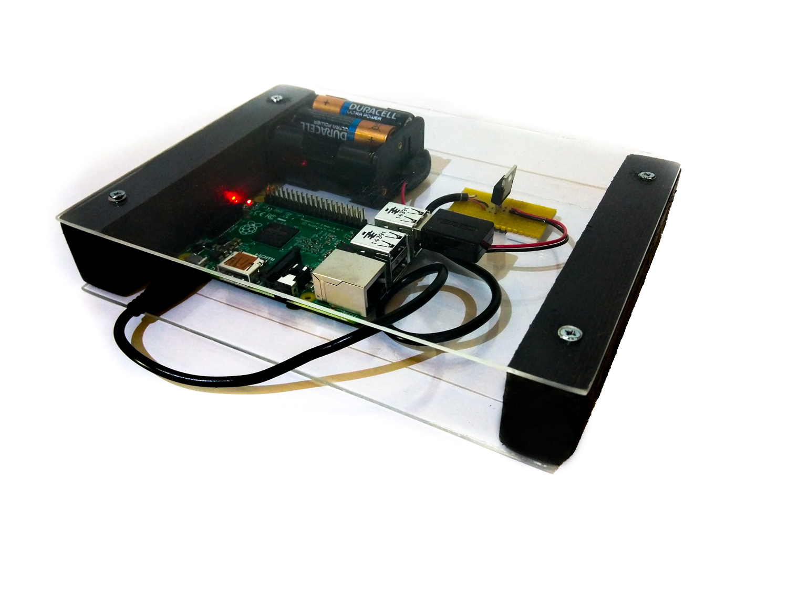

Preso-Meister
Next level presentations
by Team Argenta
the preso-meister

Quick Howto
Navigate
Ask Questions
Notes
Our solution is unique*
* source: Capgemini App Center research
and ready to use
Standalone
Cross device compatible
Pre configured
it's build with
Next steps
Deal presentations?
Made by
Pieter-Jan Beelen
Karin Keijzer
Jorne Roefs
Carlo Vanhoutte
Erwin Vermeulen